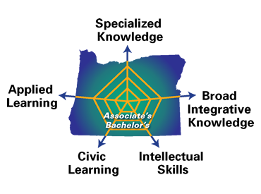

The Degree Qualifications Profile (DQP) in Oregon
Overview
"The Lumina Foundation published a report entitled The Degree Qualification Profile, by authors Cliff Adelman, Peter Ewell, Paul Gaston, and Carol Geary Schneider. This framework illustrates clearly what the authors think students should be expected to know and be able to do once they earn their degrees at any level regardless of a student's field of specialization. The DQP focuses on five dimensions of learning including: Applied Learning; Civic Learning; Intellectual Skills; Broad, Integrative Knowledge; and Specialized Knowledge and seeks to align learning outcomes with these dimensions.
The DQP Project in Oregon is a joint effort of all seven Oregon University System (OUS) institutions and the state’s seventeen independent community colleges to develop the Degree Qualifications Profile for Oregon. The DQP Project in Oregon will provide a descriptive curricular framework for describing institutions' degree outcomes across the state, both in their unique characters and in their shared aspects. The project relates directly to the missions of each institution to support their students' success during college, upon graduation, and in transitions within the Oregon educational system. This statewide partnership of educational institutions has the active support from both the Oregon University System (OUS) Chancellor and the Oregon Community Colleges and Workforce Development (CCWD) Commissioner."